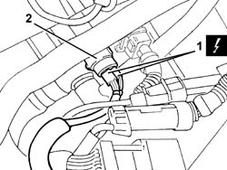
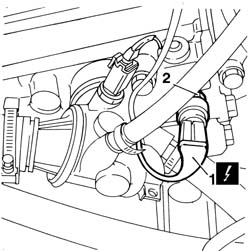
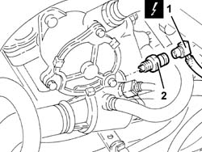

1088E35 combined sender unit for coolant temperature gauge and warninglight r r
- Path
- Procedures > 10 ENGINE > 1088 ENGINE COOLING > 1088E coolant temperature control devices > 1088E35 combined sender unit for coolant temperature gauge and warninglight r r
- Kind
- repair procedure (removal / refitting; the operation number is the code)
- Applies to
- engines: 1.6 TS , 1.8 TS, 2.5 V6, 1.9 JTD 8v , 2.4 JTD 10v; all production periods
- Interactive page
- https://sloeber94.github.io/elrnDB-a156/en/#/3237638
Applies to: engines: 2.5 V6; production: fino a 03/98, da 04/98 a 02/99, da 02/00 a 01/01
 Removing
Removing
 Refitting
RefittingEnsure that the ignition key is in the OFF position, then disconnect the battery negative (-) terminal.
 | Name | Connector |
|---|---|---|
- | Battery |
1048A34 sleeve(s) from flow meter to air supply capacity case - r + r .
1. Disconnect the electrical connection from the combined sender unit for the engine coolant temperature gauge and warning light.
| Name | Connector |
|---|---|---|
- | Coolant temperature sender unit |
2. Undo and remove the combined sender unit for the engine coolant temperature gauge and warning light.

Applies to: engines: 2.5 V6; production: fino a 03/98, da 04/98 a 02/99, da 02/00 a 01/01
Refitting
RemovingFit the combined sender unit for the engine coolant temperature gauge and warning light and tighten it to the recommended torque.
 | Fastening | Component | Ø | Value (daNm) |
|---|---|---|---|---|
- | - | COOLANT TEMPT- TEMPT. GAUGE SENDING UNIT | M12 | (Thermostat side) 1.7 - 2.1 |
Connect the electrical connections to the combined sender unit for the coolant temperature gauge and overheating warning light.
1048A34 sleeve(s) from flow meter to air supply capacity case - r + r .
Connect the negative (-) battery terminal.
Applies to: engines: 1.6 TS , 1.8 TS; all production periods
Removing
RefittingDisconnect battery negative pole.
| Name | Connector |
|---|---|---|
- | Battery |
1. Disconnect electric connection of combined sender unit for coolant temperature gauge and warning light.
| Name | Connector |
|---|---|---|
1 | Coolant temperature sender unit |
2. Unscrew and remove sender from cylinder head.

Applies to: engines: 1.6 TS , 1.8 TS; all production periods
Refitting
RemovingPosition and screw sender to cylinder head.
| Fastening | Component | Ø | Value (daNm) |
|---|---|---|---|---|
- | Connector | COOLANT TEMPT- TEMPT. GAUGE SENDING UNIT | M16 | 2.3 - 3.3 |
Connect sender electric connection.
Connect battery negative pole.
Applies to: engines: 1.9 JTD 8v , 2.4 JTD 10v; all production periods
Removing
Refitting1. Disconnect the electrical connection from the combined sender unit for the coolant temperature gauge and overheating warning light.
| Name | Connector |
|---|---|---|
1 | Coolant temperature sender unit |
2. Undo and remove the combined sender unit for the engine coolant temperature gauge and warning light.

Applies to: engines: 1.9 JTD 8v , 2.4 JTD 10v; all production periods
Refitting
RemovingFit the combined sender unit for the engine coolant temperature gauge and warning light and tighten it to the recommended torque.
| Fastening | Component | Ø | Value (daNm) |
|---|---|---|---|---|
- | Bolt | COOLANT TEMPT- TEMPT. GAUGE SENDING UNIT | M12 | 1.7 - 2.1 |
Connect the electrical connection to the combined sender unit for the coolant temperature gauge and overheating warning light.
Topics linked from this page (4)
- 1048A34 sleeve(s) from flow meter to air supply capacity case - r + r
- 5530B10 battery - r+r
- A1B Battery ( BATTERY NEGATIVE )
- K35 Coolant temperature sender unit